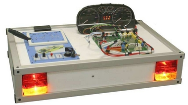
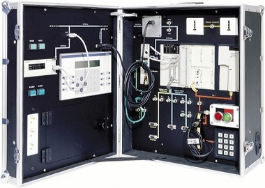
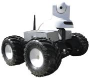

Le BTS SN forme des Technicien(ne)s Supérieur(e)s polyvalent(e)s dans tous les domaines liés à l'informatique.
Les métiers du Technicien(ne) Supérieur(e) en SN sont très divers : technicien en bureau d'études, développeur de produits, intégrateur de système et de réseaux, installateur de systèmes informatiques, technicien de maintenance, technico-commercial, responsable du support technique, formateur , responsable de projet... Les métiers s'exercent dans différents types d'entreprises : sociétés de services en informatique, sociétés utilisatrices d'équipement informatisés et/ou automatisés, entreprises réalisatrices de solutions dédiées et d'équipements automatisés et/ou informatisés.
Un enseignement en modules issus du Référentiel des activités Professionnelles : à tout moment, l'étudiant connaît l'utilité professionnelle de ce qu'il apprend. Les compétences acquises sont valid'es module par module.
Le lycée R. Queneau et ses équipes pédagogiques sont dans une dynamique de partenariat avec l'environnement économique industriel local et régional.
Les poursuites d'études après le BTS existent :
La formation au BTS se déroule sur 2 ans avec différentes phases : ( cours, travaux pratiques et dirigés, stage de 6 semaines en entreprise, projets...). Notre laboratoire dédié ainsi que notre situation géographique privilégiée (avec desserte SNCF + vikibus) permettent de travailler dans les meilleures conditions.
 
La formation au BTS se déroule sur 2 ans avec différentes phases (cours, travaux pratiques et dirigés, stage de 6 semaines en entreprise, projets...). Notre laboratoire dédié ainsi que notre situation géographique privilégiée (avec desserte SNCF + vikibus) permettent de travailler dans les meilleures conditions.